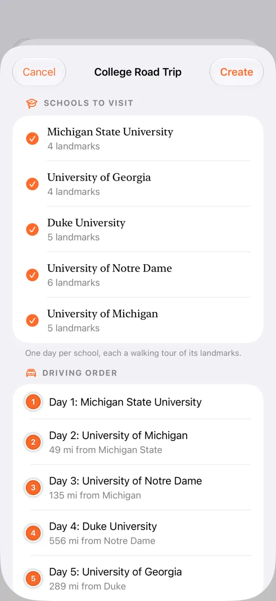
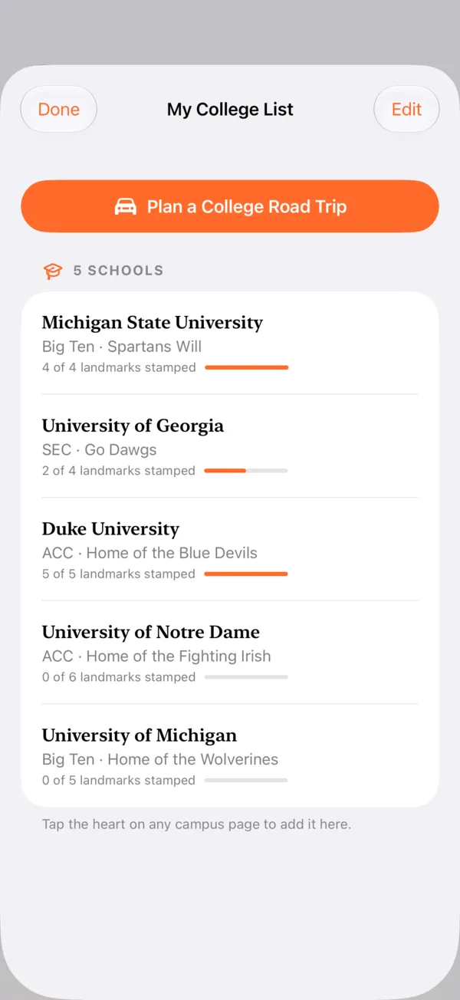

Ein Städte-Reisepass · Kostenlos für iPhone & iPad
Die großen Bauwerke der Welt, gestempelt.
Von der Großen Pyramide bis Fallingwater: Fliege in 3D durch echte Städte, erfahre, wer was warum gebaut hat, und sammle an jeder Sehenswürdigkeit, die du besuchst, einen Stempel für deinen Reisepass.
- 1.800+Bauwerke
- 140Städte
- 6Kontinente
- 60+Länder
- 101Campusse
- 9Sprachen
So funktioniert's
Entdecken. Reisen. Stempeln.
-
Entdecke vom Sofa aus
Fliege in fotorealistischem 3D durch 140 Städte und lies die Geschichte hinter jedem Gebäude.
-
Plane die Reise
Ordne Sehenswürdigkeiten Tag für Tag, füge Hotels und Restaurants hinzu und sieh dir die Route vorab in 3D an.
-
Fülle deinen Reisepass
Sammle an jeder besuchten Sehenswürdigkeit einen Stempel und meistere eine Stadt, indem du alle stempelst.
Sechs Kontinente · 140 Städte
Alle Kontinente, die du anfliegen kannst.
Nicht nur die üblichen Hauptstädte. Stamped! umfasst 140 Städte von Reykjavík bis Sansibar, jede mit eigenen Sehenswürdigkeiten, eigenem Quiz und eigenem Stempel.
-
Europa 34 Städte
Paris, Rom, Barcelona, London, Prag, Istanbul, Reykjavík, Tiflis…
-
Asien 38 Städte
Tokio, Kyoto, Seoul, Singapur, Dubai, Mumbai, Kathmandu, Xi'an…
-
Nordamerika 37 Städte
New York, Chicago, Mexiko-Stadt, Havanna, Toronto, Honolulu, Detroit…
-
Südamerika 15 Städte
Rio de Janeiro, Buenos Aires, Brasília, Lima, Cartagena, Medellín…
-
Afrika 11 Städte
Kairo, Marrakesch, Kapstadt, Lagos, Nairobi, Addis Abeba, Sansibar…
-
Ozeanien 5 Städte
Sydney, Melbourne, Brisbane, Auckland, Queenstown
In der App · 1.800+ Sehenswürdigkeiten
Ein paar der Orte, die auf dich warten.
Jeder öffnet den Stadtführer (auf Englisch) mit Architekt, Baujahr und der Geschichte dahinter.
-
 EiffelturmParis
Foto: Benh LIEU SONG, Public domain
EiffelturmParis
Foto: Benh LIEU SONG, Public domain
-
 KolosseumRom
Foto: FeaturedPics, CC BY-SA 4.0
KolosseumRom
Foto: FeaturedPics, CC BY-SA 4.0
-
 Sagrada FamíliaBarcelona
Foto: Canaan, CC BY-SA 4.0
Sagrada FamíliaBarcelona
Foto: Canaan, CC BY-SA 4.0
-
 Cheops-Pyramide von GizehKairo
Foto: Douwe C. van der Zee, CC BY-SA 4.0
Cheops-Pyramide von GizehKairo
Foto: Douwe C. van der Zee, CC BY-SA 4.0
-
 Sydney Opera HouseSydney
Foto: Bernard Spragg. NZ from Christchurch, New Zealand, CC0
Sydney Opera HouseSydney
Foto: Bernard Spragg. NZ from Christchurch, New Zealand, CC0
-
 Cristo RedentorRio de Janeiro
Foto: Arne Müseler, CC BY-SA 3.0 de
Cristo RedentorRio de Janeiro
Foto: Arne Müseler, CC BY-SA 3.0 de
-
 Empire State BuildingNew York
Foto: Sam Valadi, Public domain
Empire State BuildingNew York
Foto: Sam Valadi, Public domain
-
 Kinkaku-jiKyoto
Foto: Nacaru, CC BY-SA 4.0
Kinkaku-jiKyoto
Foto: Nacaru, CC BY-SA 4.0
-
 Hagia SophiaIstanbul
Foto: Adli Wahid, CC BY-SA 3.0
Hagia SophiaIstanbul
Foto: Adli Wahid, CC BY-SA 3.0
-
 Petronas TowersKuala Lumpur
Foto: James Kerwin from Tbilisi, CC BY 2.0
Petronas TowersKuala Lumpur
Foto: James Kerwin from Tbilisi, CC BY 2.0
-
 FallingwaterPittsburgh
Foto: lachrimae72, CC0
FallingwaterPittsburgh
Foto: lachrimae72, CC0
-
 HallgrímskirkjaReykjavík
Foto: Steinninn, CC BY 4.0
HallgrímskirkjaReykjavík
Foto: Steinninn, CC BY 4.0
.jpg){kind=link}


.jpg){kind=link}

.jpg){kind=link}

.jpeg){kind=link}
_(cropped)_2.jpg){kind=link}


Entdecken · Fotorealistisches 3D + Umsehen
Vom Himmel auf die Straße.
Satellitenbilder über echten Gebäudehöhen. Tippe auf eine Stecknadel und die Kamera fliegt direkt hin, oder starte eine geführte Tour, die dich von Sehenswürdigkeit zu Sehenswürdigkeit fliegt. Dann geht es hinunter auf Straßenebene, damit du siehst, wie ein Gebäude aussieht, bevor du dort bist.
- Geh die Sehenswürdigkeiten direkt in der Kartenansicht in Laufreihenfolge durch
- Filtern nach nicht besucht, gestempelt, Wunschziele und Baustil
- Schnellfilter für Essen, Kaffee, Kultur und Unterkünfte


Geführte Tour · In der App aufgenommen
Play drücken und abheben.
Die geführte Tour fliegt von selbst von Sehenswürdigkeit zu Sehenswürdigkeit, mit Infokarte und Umsehen-Vorschau an jedem Stopp.
Entdecken · Die Menschen hinter den Bauwerken
Triff die Architekten.
Zu jeder Sehenswürdigkeit gibt es Architekt, Stil, Baujahr, Höhe und Geschichte. Stamped! merkt sich, wessen Bauwerke du gesehen hast, und zeigt deinen Lieblingsarchitekten.
- Frank Lloyd Wright18
- Oscar Niemeyer16
- Frank Gehry14
- I. M. Pei14
- Zaha Hadid12
- Herzog & de Meuron11
- Mies van der Rohe10
- Renzo Piano7
- Jean Nouvel7
- Santiago Calatrava6
- Le Corbusier5
- Antoni Gaudí3

Spielen · Architektur-Quiz
Teste dein Wissen.
Jede Stadt und jeder Campus hat ein eigenes Quiz mit 10 Fragen zu seinen echten Sehenswürdigkeiten: Stil, Baujahr, Architekt, Anzahl der Stockwerke. Insgesamt 241 Quizze in 9 Sprachen. Tippe deine Antwort an oder sag sie laut.
Wie viele Stockwerke hat das Flatiron Building?
Probier's aus. Drei Fragen.

Planen · Reisen
Plane die Reise, Tag für Tag.
Stell eine mehrtägige Reise aus Sehenswürdigkeiten und eigenen gespeicherten Orten zusammen und fliege sie vor der Abreise auf der 3D-Karte ab.
- Stopps umsortieren, Gehzeiten sehen und die Route mit einem Tipp optimieren
- Jedes Restaurant, jeden Laden oder Veranstaltungsort aus Apple Karten hinzufügen
- Hotels für jede Nacht finden, mit einer Hotelsuche für deine Reisedaten
- Reisen werden per iCloud zwischen iPhone und iPad synchronisiert

Auf jeder Stadtseite
Alles, was du brauchst, sobald du landest.
Jede Stadtseite beantwortet „Und jetzt?“, damit du keine fünf anderen Apps brauchst.
-
Hotels
Hotels auf der Karte und eine Hotelsuche für deine Reisedaten.
-
Essen gehen
Die besten Lokale nahe den Sehenswürdigkeiten, dazu Essen und Kaffee auf der Karte.
-
Events
Kommende Konzerte und Spiele an bekannten Veranstaltungsorten, mit Ticket-Links.
-
Wetter
Die Vorhersage für die Stadt, die du erkundest.
-
Währung
Ein schneller Umrechner für die Landeswährung.
-
Flughafen
Der wichtigste Flughafen, sein Code und was ihn sehenswert macht.
-
Sag Hallo
So begrüßt du Menschen in der Landessprache.
-
Wunschziele
Markiere jede Sehenswürdigkeit oder jeden Ort aus Apple Karten mit einem Herz, um ihn zu merken.
Für Uni-Besuche · Neu in 2.5
College-Besuche geplant? Stamped! plant die Route.
Speichere die Unis, die infrage kommen, und Stamped! macht daraus einen Roadtrip: ein Campus pro Tag, in kurzer Fahrreihenfolge. Jede Uni aus Big Ten, SEC, ACC und Big 12, die Ivy League und großartige Campusse von Oxford bis Melbourne.
- Jeden Campus in 3D erkunden, bevor du hinfährst
- Die bekanntesten Gebäude und ihre Geschichte kennenlernen
- Traditionen abhaken, die Studierende wirklich pflegen, etwa die Glücksstatue reiben
- Kostenlos für iPhone und iPad, Reisen per iCloud synchronisiert
- Big Ten
- SEC
- ACC
- Big 12
- Ivy League
- + weltweit



Sammeln · Dein Reisepass
Sammle sie alle.
Sammle einen Stempel für jede besuchte Sehenswürdigkeit und sieh zu, wie sich dein Reisepass füllt, Stadt für Stadt und Land für Land. Du meisterst eine Stadt, wenn du alle ihre Sehenswürdigkeiten gestempelt hast.
- Erfolge für erste Stempel, Nachteulen, Wochenend-Entdecker und mehr
- Eine Weltkarte mit allen Orten, an denen du warst
- Campus-Stempel in den Farben der Uni
- Teile deinen Reisepass und sieh ihn per Widget auf dem Home-Bildschirm

Und die kleinen Dinge.
-
iCloud-Sync
Stempel, Reisen und Listen sind auf all deinen Geräten dabei.
-
9 Sprachen
Englisch, Deutsch, Spanisch, Französisch, Italienisch, Japanisch, Koreanisch, Portugiesisch und Chinesisch.
-
Für alle gemacht
Optionen für hohen Kontrast und reduzierte Bewegung, dazu ein Dunkelmodus.
Dein Reisepass wartet.
1.800+ Sehenswürdigkeiten. Ein Stempel für jede. Kostenlos für iPhone und iPad.